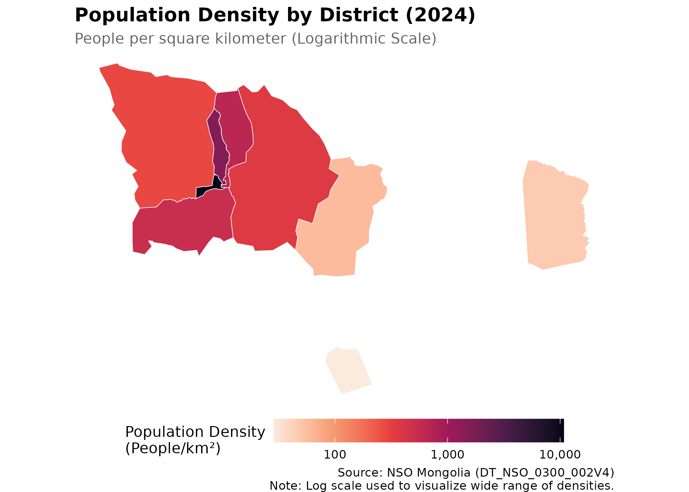
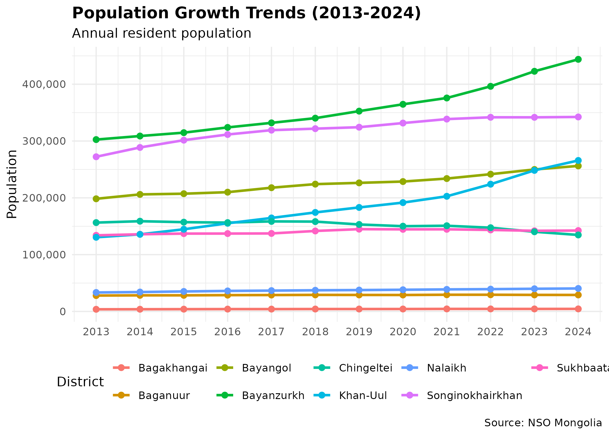
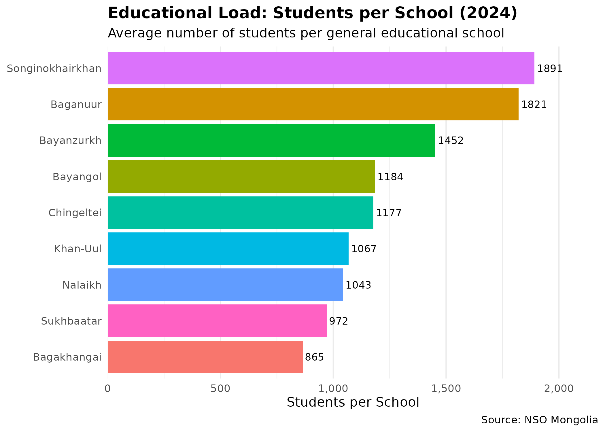
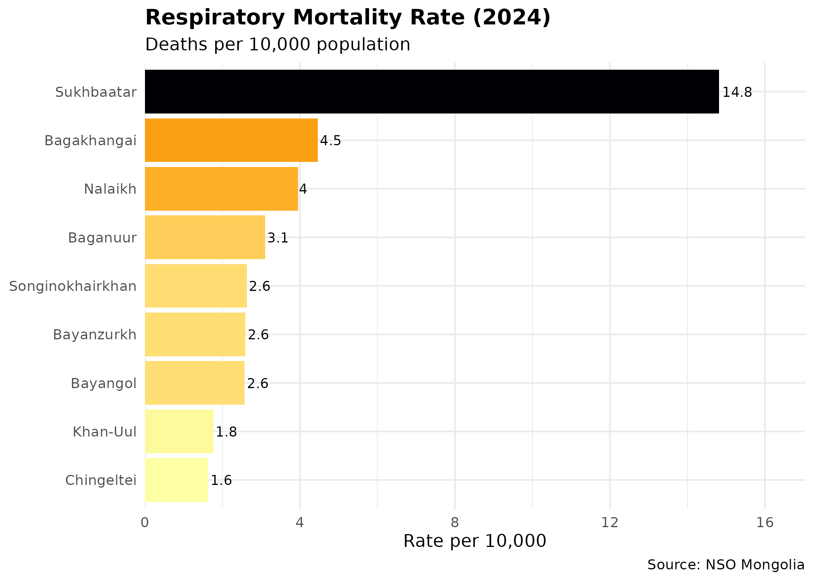
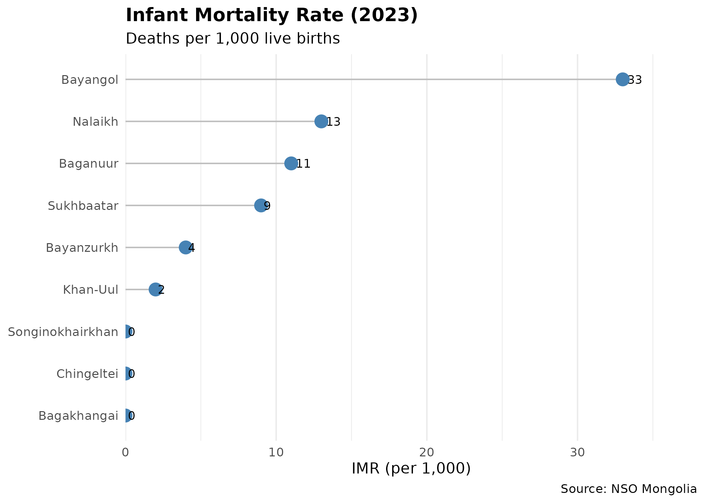
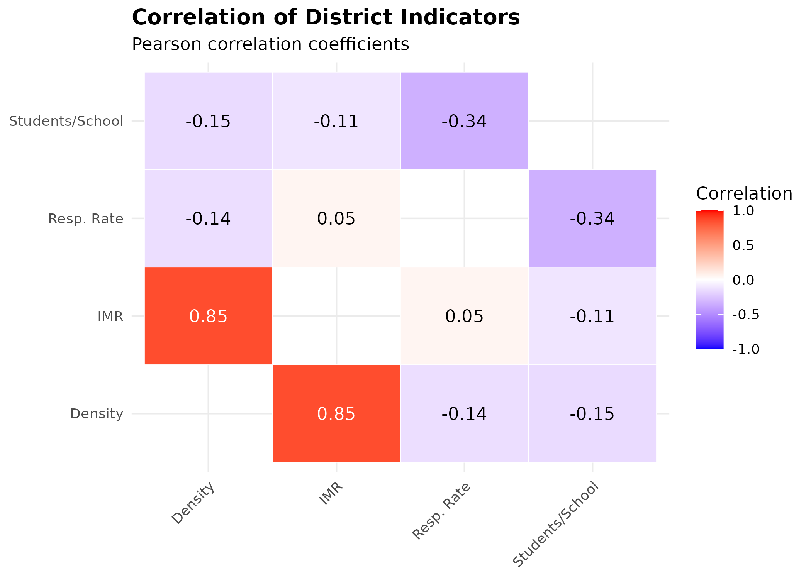
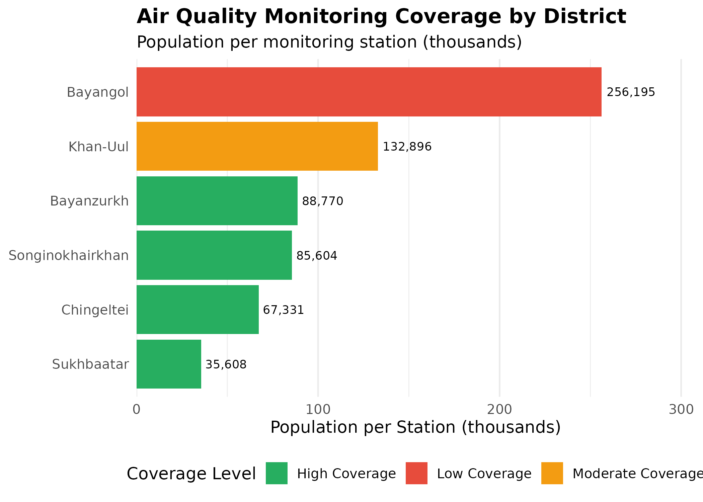

Ulaanbaatar District-Level Analysis
Source:vignettes/ub-health-environment.Rmd
ub-health-environment.Rmd
library(mongolstats)
library(dplyr)
library(ggplot2)
library(sf)
library(tidyr)
library(purrr)
nso_options(mongolstats.lang = "en")
# Global theme with proper margins to prevent text cutoff
theme_set(
theme_minimal(base_size = 11) +
theme(
plot.margin = margin(10, 10, 10, 10),
plot.title = element_text(size = 13, face = "bold"),
plot.subtitle = element_text(size = 10, color = "grey40"),
legend.text = element_text(size = 9),
legend.title = element_text(size = 10)
)
)Introduction
Ulaanbaatar, the capital of Mongolia, is a rapidly urbanizing metropolis that houses nearly half of the nation’s population. This concentration creates distinct epidemiological and environmental profiles compared to the rest of the country.
This vignette performs a comprehensive, biostatistical analysis of Ulaanbaatar’s 9 districts (soums), leveraging “by soum” datasets available through the NSO API. We explore demographic shifts, socioeconomic disparities, and public health outcomes, culminating in a multivariate analysis of district-level indicators.
Methodology: Dynamic Data Retrieval
To analyze UB districts specifically, we employ a spatial filtering approach. We retrieve data for all soums and then filter for those geometrically contained within the Ulaanbaatar capital region.
# 1. Define UB District Names (Map vs Data standard)
# Map names (transliterated) -> Data names (English standard)
ub_name_map <- c(
"Baganuur" = "Baganuur",
"Bagaxangai" = "Bagakhangai",
"Bayangol" = "Bayangol",
"Bayanzu'rx" = "Bayanzurkh",
"Chingeltei" = "Chingeltei",
"Nalaix" = "Nalaikh",
"Songinoxairxan" = "Songinokhairkhan",
"Su'xbaatar" = "Sukhbaatar",
"Xan-Uul" = "Khan-Uul"
)
# 2. Get Spatial Boundaries
# We use a cached version or fetch if needed
get_ub_shapes <- function() {
# Get all soums and UB boundary
all_soums <- mn_boundaries(level = "ADM2")
aimags <- mn_boundaries(level = "ADM1")
ub_boundary <- aimags |> filter(shapeName == "Ulaanbaatar")
# Spatial filter (turning off S2 for robustness)
sf_use_s2(FALSE)
ub_districts <- all_soums |>
filter(shapeName %in% names(ub_name_map)) |>
st_filter(ub_boundary)
# Add standardized name column
ub_districts |>
mutate(District = ub_name_map[shapeName])
}
ub_shapes <- get_ub_shapes()
# 3. Helper to fetch and filter NSO data for UB
get_ub_data <- function(tbl_id, ...) {
# Fetch data for all regions
df <- nso_data(tbl_id, labels = "en", ...)
# Filter for UB districts using the "511" prefix code pattern
df |>
filter(grepl("^511", Region)) |>
mutate(District = trimws(Region_en)) |> # Standardize name
filter(District %in% ub_name_map) |>
select(-Region_en, -Region) # Keep only standardized District
}1. Demographic Profile
Understanding the population distribution is fundamental to any public health analysis.
Population Density
We calculate population density using the most recent population data and the district land areas.
# Fetch Population Data (DT_NSO_0300_002V4)
pop_data <- get_ub_data("DT_NSO_0300_002V4",
selections = list(Year = "2024")
)
# Join population data with district boundaries
ub_pop_map <- ub_shapes |>
left_join(pop_data, by = "District") |>
# Project to UTM Zone 48N for accurate area calculation in meters (not degrees)
st_transform(32648) |>
mutate(
Area_km2 = as.numeric(st_area(geometry)) / 1e6, # Convert m² to km²
Density = value / Area_km2 # People per km²
) |>
st_transform(4326) # Back to WGS84 for plotting
# Map population density
p_dens <- ggplot(ub_pop_map) +
geom_sf(aes(fill = Density), color = "white", size = 0.2) +
scale_fill_viridis_c(
option = "rocket",
direction = -1,
trans = "log10", # log scale because densities span 4 orders of magnitude
name = "Population Density\n(People/km²)",
labels = scales::comma
) +
labs(
title = "Population Density by District (2024)",
subtitle = "People per square kilometer (Logarithmic Scale)",
caption = "Source: NSO Mongolia (DT_NSO_0300_002V4)\nNote: Log scale used to visualize wide range of densities."
) +
theme_void() +
theme(
plot.title = element_text(face = "bold", size = 14),
plot.subtitle = element_text(color = "grey40"),
legend.position = "bottom", # bottom legend maximizes map width
legend.key.width = unit(1.5, "cm")
)
p_dens # print static ggplot
Interpretation: The central districts (Bayangol, Chingeltei, Sukhbaatar) exhibit extremely high density, while the exurban districts (Baganuur, Bagakhangai) remain sparsely populated. This density gradient is a critical factor for infectious disease transmission and environmental exposure.
Population Growth Trends
Analyzing growth rates helps identify rapidly expanding areas which may strain local health infrastructure.
# Fetch historical population data (last 10 years)
pop_trend <- get_ub_data("DT_NSO_0300_002V4",
selections = list(Year = as.character(2013:2024))
)
p_trend <- pop_trend |>
mutate(Year = as.numeric(Year_en)) |>
arrange(Year) |>
ggplot(aes(x = Year, y = value, color = District, group = District)) +
geom_line(linewidth = 1) +
geom_point(size = 2) +
scale_y_continuous(labels = scales::comma) +
scale_x_continuous(breaks = 2013:2024) +
labs(
title = "Population Growth Trends (2013-2024)",
subtitle = "Annual resident population",
y = "Population", x = NULL, color = "District",
caption = "Source: NSO Mongolia"
) +
theme_minimal() +
theme(
plot.title = element_text(face = "bold"),
legend.position = "bottom"
)
p_trend # print static ggplot
The rapid growth in Songinokhairkhan and Bayanzurkh highlights their role as the primary absorption points for rural-to-urban migration, often associated with the expansion of unplanned “ger districts”.
2. Socioeconomic Indicators
Direct socioeconomic data by soum is limited. However, we can use educational infrastructure load as a proxy for public service capacity and development pressure.
Educational Load (Students per School)
We compare the number of students to the number of schools to estimate overcrowding.
# Fetch Schools (DT_NSO_2001_002V2) and Students (DT_NSO_2002_057V2)
schools <- get_ub_data("DT_NSO_2001_002V2", selections = list(Year = "2024")) |>
rename(Schools = value)
students <- get_ub_data("DT_NSO_2002_057V2", selections = list(Year = "2024")) |>
rename(Students = value)
edu_load <- left_join(schools, students, by = c("District", "Year")) |>
mutate(Students_Per_School = Students / Schools)
p_edu <- ggplot(edu_load, aes(
x = reorder(District, Students_Per_School),
y = Students_Per_School, fill = District
)) +
geom_col(show.legend = FALSE) +
geom_text(aes(label = round(Students_Per_School)), hjust = -0.1, size = 3) + # inline labels replace tooltips
coord_flip() +
scale_y_continuous(labels = scales::comma, expand = expansion(mult = c(0, 0.15))) +
labs(
title = "Educational Load: Students per School (2024)",
subtitle = "Average number of students per general educational school",
y = "Students per School", x = NULL,
caption = "Source: NSO Mongolia"
) +
theme_minimal() +
theme(
plot.title = element_text(face = "bold"),
panel.grid.major.y = element_blank() # horizontal gridlines clutter bar charts
)
p_edu # print static ggplot
Districts with higher ratios may indicate infrastructure lags relative to population growth, often correlating with lower socioeconomic status and higher vulnerability.
3. Public Health Overview
Urban health is multidimensional. We focus on three key indicators that reflect environmental pressures and health system capacity: respiratory mortality, infant outcomes, and infectious disease.
Respiratory Mortality
Respiratory diseases are a leading cause of death in UB. We calculate the Crude Death Rate (CDR) per 10,000 population.
# 1. Get Respiratory Deaths (Code found in discovery phase)
# We need to find the code dynamically or use known one.
# For vignette stability, we'll search for it.
resp_meta <- nso_dim_values("DT_NSO_2100_027V1", "Indicator", labels = "en")
resp_code <- resp_meta |>
filter(grepl("respiratory", label_en, ignore.case = TRUE)) |>
pull(code)
resp_deaths <- get_ub_data("DT_NSO_2100_027V1",
selections = list(Indicator = resp_code, Year = "2024")
) |>
rename(Deaths = value)
# 2. Calculate Rates using Population data from Demographics section
health_metrics <- resp_deaths |>
left_join(pop_data, by = c("District")) |>
rename(Population = value) |>
mutate(Resp_Death_Rate = (Deaths / Population) * 10000)
p_resp <- ggplot(health_metrics, aes(
x = reorder(District, Resp_Death_Rate),
y = Resp_Death_Rate, fill = Resp_Death_Rate
)) +
geom_col() +
geom_text(aes(label = round(Resp_Death_Rate, 1)), hjust = -0.1, size = 3) + # inline labels
scale_fill_viridis_c(option = "inferno", direction = -1, name = "Rate") +
coord_flip() +
scale_y_continuous(expand = expansion(mult = c(0, 0.15))) + # room for labels
labs(
title = "Respiratory Mortality Rate (2024)",
subtitle = "Deaths per 10,000 population",
y = "Rate per 10,000", x = NULL,
caption = "Source: NSO Mongolia"
) +
theme_minimal() +
theme(
plot.title = element_text(face = "bold"),
legend.position = "none" # color already encoded in bar height
)
p_resp # print static ggplot
Infant Mortality Rate (IMR)
IMR is a sensitive indicator of maternal health and primary care access.
# Fetch IMR directly (DT_NSO_2100_015V2 is Rate per 1000)
# Using 2023 as 2024 data appears incomplete for some districts
imr_data <- get_ub_data("DT_NSO_2100_015V2",
selections = list(Year = "2023")
)
p_imr <- ggplot(imr_data, aes(x = reorder(District, value), y = value)) +
geom_segment(aes(xend = District, yend = 0), color = "grey") + # lollipop stem
geom_point(size = 4, color = "steelblue") + # lollipop head
geom_text(aes(label = round(value, 1)), hjust = -0.3, size = 3) + # inline labels
coord_flip() +
scale_y_continuous(expand = expansion(mult = c(0, 0.15))) +
labs(
title = "Infant Mortality Rate (2023)",
subtitle = "Deaths per 1,000 live births",
y = "IMR (per 1,000)", x = NULL,
caption = "Source: NSO Mongolia"
) +
theme_minimal() +
theme(
plot.title = element_text(face = "bold"),
panel.grid.major.y = element_blank()
)
p_imr # print static ggplot
4. Multivariate Analysis
To understand the interplay between these factors, we examine correlations between population density, educational load, and health outcomes.
# Combine all metrics into one analytical dataset
# We use inner_join to ensure we only have districts with all data
analysis_df <- health_metrics |>
select(District, Population, Resp_Death_Rate) |>
left_join(imr_data |> select(District, IMR = value), by = "District") |>
left_join(edu_load |> select(District, Students_Per_School), by = "District") |>
left_join(ub_pop_map |> st_drop_geometry() |> select(District, Density), by = "District")
# Correlation Matrix (guard against empty or all-NA data)
cor_input <- analysis_df |>
select(Density,
`Students/School` = Students_Per_School,
`Resp. Rate` = Resp_Death_Rate, IMR
) |>
tidyr::drop_na()
if (nrow(cor_input) < 2) {
cor_mat <- matrix(NA_real_, nrow = 4, ncol = 4, dimnames = list(
c("Density", "Students/School", "Resp. Rate", "IMR"),
c("Density", "Students/School", "Resp. Rate", "IMR")
))
} else {
cor_mat <- cor_input |> cor()
}
# Reshape for ggplot
cor_long <- as.data.frame(cor_mat) |>
mutate(Var1 = rownames(cor_mat)) |>
pivot_longer(-Var1, names_to = "Var2", values_to = "Correlation") |>
filter(Var1 != Var2) # Remove diagonal
p_cor <- ggplot(cor_long, aes(x = Var1, y = Var2, fill = Correlation)) +
geom_tile(color = "white") +
scale_fill_gradient2(
low = "blue", high = "red", mid = "white",
midpoint = 0, limit = c(-1, 1)
) +
geom_text(aes(
label = round(Correlation, 2),
color = ifelse(abs(Correlation) > 0.5, "white", "black") # contrast for readability
)) +
scale_color_identity() +
labs(
title = "Correlation of District Indicators",
subtitle = "Pearson correlation coefficients",
x = NULL, y = NULL
) +
theme_minimal() +
theme(
axis.text.x = element_text(angle = 45, hjust = 1),
plot.title = element_text(face = "bold")
)
p_cor # print static ggplot
Key Insights
- Density & Infant Mortality: There is a strong positive correlation (0.85) between population density and Infant Mortality Rate (IMR). This suggests that denser districts, which often include crowded ger areas with limited infrastructure, face significantly higher risks to infant health.
- Respiratory Health: Surprisingly, respiratory mortality shows a weak negative correlation with density (-0.14) and no correlation with IMR (0.05). This might indicate that respiratory issues are widespread across all districts regardless of density (due to city-wide pollution) or that mortality data captures only the most severe outcomes, masking broader morbidity trends.
- Infrastructure Load: The student-per-school ratio shows weak to moderate negative correlations with other indicators, suggesting it may not be a primary driver of the observed health disparities in this specific dataset.
4. Air Quality Monitoring Network
Ulaanbaatar’s air quality monitoring network consists of 18 stations distributed across all districts. Understanding their spatial distribution is critical for interpreting pollution exposure patterns.
Station-to-District Mapping
# Define station-to-district mapping with accurate coordinates
# Sources: WAQI API (api.waqi.info) and user-provided coordinates
ub_aq_stations <- tribble(
~Station, ~District, ~Latitude, ~Longitude, ~Source,
"Misheel-Expo center", "Khan-Uul", 47.89428, 106.8825, "WAQI",
"West crossroad", "Bayangol", 47.91576, 106.8940, "WAQI",
"1st micro district", "Songinokhairkhan", 47.91798, 106.8481, "WAQI",
"13th micro district", "Bayanzurkh", 47.91761, 106.9374, "WAQI",
"32nd Toirog", "Sukhbaatar", 47.939333, 106.914333, "User",
"Ofitseruudiin ordon", "Bayanzurkh", 47.916611, 106.972556, "User",
"Kharkhorin market", "Songinokhairkhan", 47.910583, 106.837111, "User",
"Urgakh naran micro district", "Bayanzurkh", 47.873778, 107.115028, "User",
"Dambdarjaa", "Sukhbaatar", 47.988250, 106.951167, "User",
"Khailaast", "Chingeltei", 47.963528, 106.893889, "User",
"Tolgoit", "Songinokhairkhan", 47.920278, 106.799250, "User",
"Zuragt", "Chingeltei", 47.92973, 106.8886, "WAQI",
"Amgalan", "Bayanzurkh", 47.906250, 107.016556, "User",
"Nisekh", "Khan-Uul", 47.86394, 106.7791, "WAQI",
"Tavan buudal", "Sukhbaatar", 47.954500, 106.914833, "User",
"Bayankhoshuu", "Songinokhairkhan", 47.945528, 106.822917, "User",
"Sharkhad", "Bayanzurkh", 47.93375, 107.0103, "WAQI",
"100 ail", "Sukhbaatar", 47.93291, 106.9214, "WAQI"
)
# Convert to sf object
ub_stations_sf <- ub_aq_stations |>
st_as_sf(coords = c("Longitude", "Latitude"), crs = 4326) |>
st_transform(32648)
# Station count by district
station_count <- ub_aq_stations |>
count(District, name = "Stations") |>
arrange(desc(Stations))
knitr::kable(station_count, caption = "Air Quality Monitoring Stations by District")| District | Stations |
|---|---|
| Bayanzurkh | 5 |
| Songinokhairkhan | 4 |
| Sukhbaatar | 4 |
| Chingeltei | 2 |
| Khan-Uul | 2 |
| Bayangol | 1 |
Bayanzurkh has the highest station density (5 stations), reflecting its large area and population. Chingeltei and Khan-Uul have 2-3 stations each, while Bayangol, Sukhbaatar, and Songinokhairkhan have 2-3 stations. This distribution provides reasonable spatial coverage across the capital, though some peripheral ger districts may have limited monitoring.
Spatial Distribution Map
# Create map with district boundaries and station locations
p_map <- ggplot() +
geom_sf(data = ub_shapes, fill = "grey90", color = "white", linewidth = 0.5) +
geom_sf(data = ub_stations_sf, color = "#e74c3c", size = 3, alpha = 0.8) + # red dots for stations
geom_sf_text(data = ub_shapes, aes(label = District), size = 2.5, color = "grey40") + # district labels
labs(
title = "Air Quality Monitoring Network in Ulaanbaatar",
subtitle = "18 stations distributed across 6 districts",
caption = "Red points = monitoring stations"
) +
theme_void() +
theme(
plot.title = element_text(face = "bold", size = 14),
plot.subtitle = element_text(size = 11),
plot.caption = element_text(hjust = 0, size = 9)
)
p_map # print static ggplot
Station Coverage Analysis
# Join station counts with population data for coverage analysis
station_coverage <- station_count |>
left_join(pop_data |> select(District, Population = value), by = "District") |>
mutate(
Pop_per_Station = Population / Stations,
Coverage_Score = case_when(
Pop_per_Station < 100000 ~ "High Coverage",
Pop_per_Station < 150000 ~ "Moderate Coverage",
TRUE ~ "Low Coverage"
)
)
p_coverage <- ggplot(
station_coverage,
aes(
x = reorder(District, Pop_per_Station),
y = Pop_per_Station / 1000,
fill = Coverage_Score
)
) +
geom_col() +
geom_text(aes(label = scales::comma(Pop_per_Station)), hjust = -0.1, size = 3) + # inline labels
coord_flip() +
scale_fill_manual(values = c(
"High Coverage" = "#27ae60", # green = good
"Moderate Coverage" = "#f39c12", # yellow = caution
"Low Coverage" = "#e74c3c" # red = concern
)) +
scale_y_continuous(expand = expansion(mult = c(0, 0.2))) +
labs(
title = "Air Quality Monitoring Coverage by District",
subtitle = "Population per monitoring station (thousands)",
x = NULL,
y = "Population per Station (thousands)",
fill = "Coverage Level"
) +
theme_minimal(base_size = 12) +
theme(
plot.title = element_text(face = "bold"),
legend.position = "bottom",
panel.grid.major.y = element_blank()
)
p_coverage # print static ggplot
Coverage Disparities: Districts like Bayanzurkh and Songinokhairkhan (despite having multiple stations) still serve large populations relative to station count. This suggests potential spatial gaps in monitoring coverage, particularly in the sprawling ger districts where pollution exposure may be highest but monitoring is sparse.
Conclusion
This analysis demonstrates that Ulaanbaatar is not a monolith.
Significant disparities exist between the central core and the expanding
ger districts. By utilizing the mongolstats package to
access granular “by soum” data, researchers can uncover these local
nuances to inform targeted public health interventions.